# Instalar pacotes se necessário
if (!require("pacman")) install.packages("pacman")
pacman::p_load(
tidyverse, # Manipulação e visualização
DT, # Tabelas interativas
DataExplorer, # Exploração automatizada
skimr, # Resumos estatísticos
naniar, # Análise de dados ausentes
scales, # Formatação de escalas
knitr, # Geração de relatórios
here) # Gerenciamento de caminhosAula 10. Tidy Data e Análise Exploratória de dados
Princípios de organização e workflow em R
Pergunta para você
Se você precisar fazer uma análise exploratória completa com código, relatório de resultados e tudo mais ….
Você saberia por onde começar? Quais análises escolher?
Tip
Com a minha experiência, trouxe algumas opções de análises que utilizo no dia a dia. Existem outras, mas a aula já ficou extensa e densa, e com essas já temos um ótimo ponto de partida.
Ótimos estudos, a aula foi construída com carinho, aproveite muito!
Objetivos da apresentação
- Compreender os princípios de Tidy Data
- Aplicar transformações com pivot_longer e pivot_wider
- Utilizar nest e unnest para dados hierárquicos
- Implementar workflow exploratório sistemático
- Dominar ferramentas de EDA: DataExplorer, skimr, naniar
Conjunto de dados
Utilizaremos o dataset Coffee Ratings do TidyTuesday:
- Avaliações de qualidade de café de diferentes países
- Variáveis sensoriais: aroma, sabor, acidez, corpo
- dados de origem, processamento e pontuação final
- Ideal para demonstrar técnicas de organização e exploração
Conjunto de dados

Fonte - Clique no link:
Configuração inicial
Carregar pacotes
Importar dados - código
Importar dados
Rows: 1,339
Columns: 43
$ total_cup_points <dbl> 90.58, 89.92, 89.75, 89.00, 88.83, 88.83, 88.75,…
$ species <chr> "Arabica", "Arabica", "Arabica", "Arabica", "Ara…
$ owner <chr> "metad plc", "metad plc", "grounds for health ad…
$ country_of_origin <chr> "Ethiopia", "Ethiopia", "Guatemala", "Ethiopia",…
$ farm_name <chr> "metad plc", "metad plc", "san marcos barrancas …
$ lot_number <chr> NA, NA, NA, NA, NA, NA, NA, NA, NA, NA, NA, NA, …
$ mill <chr> "metad plc", "metad plc", NA, "wolensu", "metad …
$ ico_number <chr> "2014/2015", "2014/2015", NA, NA, "2014/2015", N…
$ company <chr> "metad agricultural developmet plc", "metad agri…
$ altitude <chr> "1950-2200", "1950-2200", "1600 - 1800 m", "1800…
$ region <chr> "guji-hambela", "guji-hambela", NA, "oromia", "g…
$ producer <chr> "METAD PLC", "METAD PLC", NA, "Yidnekachew Dabes…
$ number_of_bags <dbl> 300, 300, 5, 320, 300, 100, 100, 300, 300, 50, 3…
$ bag_weight <chr> "60 kg", "60 kg", "1", "60 kg", "60 kg", "30 kg"…
$ in_country_partner <chr> "METAD Agricultural Development plc", "METAD Agr…
$ harvest_year <chr> "2014", "2014", NA, "2014", "2014", "2013", "201…
$ grading_date <chr> "April 4th, 2015", "April 4th, 2015", "May 31st,…
$ owner_1 <chr> "metad plc", "metad plc", "Grounds for Health Ad…
$ variety <chr> NA, "Other", "Bourbon", NA, "Other", NA, "Other"…
$ processing_method <chr> "Washed / Wet", "Washed / Wet", NA, "Natural / D…
$ aroma <dbl> 8.67, 8.75, 8.42, 8.17, 8.25, 8.58, 8.42, 8.25, …
$ flavor <dbl> 8.83, 8.67, 8.50, 8.58, 8.50, 8.42, 8.50, 8.33, …
$ aftertaste <dbl> 8.67, 8.50, 8.42, 8.42, 8.25, 8.42, 8.33, 8.50, …
$ acidity <dbl> 8.75, 8.58, 8.42, 8.42, 8.50, 8.50, 8.50, 8.42, …
$ body <dbl> 8.50, 8.42, 8.33, 8.50, 8.42, 8.25, 8.25, 8.33, …
$ balance <dbl> 8.42, 8.42, 8.42, 8.25, 8.33, 8.33, 8.25, 8.50, …
$ uniformity <dbl> 10.00, 10.00, 10.00, 10.00, 10.00, 10.00, 10.00,…
$ clean_cup <dbl> 10, 10, 10, 10, 10, 10, 10, 10, 10, 10, 10, 10, …
$ sweetness <dbl> 10.00, 10.00, 10.00, 10.00, 10.00, 10.00, 10.00,…
$ cupper_points <dbl> 8.75, 8.58, 9.25, 8.67, 8.58, 8.33, 8.50, 9.00, …
$ moisture <dbl> 0.12, 0.12, 0.00, 0.11, 0.12, 0.11, 0.11, 0.03, …
$ category_one_defects <dbl> 0, 0, 0, 0, 0, 0, 0, 0, 0, 0, 0, 0, 0, 0, 0, 0, …
$ quakers <dbl> 0, 0, 0, 0, 0, 0, 0, 0, 0, 0, 0, 0, 0, 0, 0, 0, …
$ color <chr> "Green", "Green", NA, "Green", "Green", "Bluish-…
$ category_two_defects <dbl> 0, 1, 0, 2, 2, 1, 0, 0, 0, 4, 1, 0, 0, 2, 2, 0, …
$ expiration <chr> "April 3rd, 2016", "April 3rd, 2016", "May 31st,…
$ certification_body <chr> "METAD Agricultural Development plc", "METAD Agr…
$ certification_address <chr> "309fcf77415a3661ae83e027f7e5f05dad786e44", "309…
$ certification_contact <chr> "19fef5a731de2db57d16da10287413f5f99bc2dd", "19f…
$ unit_of_measurement <chr> "m", "m", "m", "m", "m", "m", "m", "m", "m", "m"…
$ altitude_low_meters <dbl> 1950.0, 1950.0, 1600.0, 1800.0, 1950.0, NA, NA, …
$ altitude_high_meters <dbl> 2200.0, 2200.0, 1800.0, 2200.0, 2200.0, NA, NA, …
$ altitude_mean_meters <dbl> 2075.0, 2075.0, 1700.0, 2000.0, 2075.0, NA, NA, …Primeiras linhas - código
Primeiras linhas - resultado
Tidy Data Principles
O que é Tidy Data?
dados organizados segundo três princípios fundamentais propostos por Hadley Wickham (2014):
- Cada variável forma uma coluna: Cada coluna representa uma única variável medida
- Cada observação forma uma linha: Cada linha representa uma única unidade observacional
- Cada tipo de unidade observacional forma uma tabela: Diferentes níveis de análise ficam em tabelas separadas
Por que Tidy Data?
Problema: dados frequentemente vêm desorganizados, dificultando análises.
Solução: Padronização facilita:
- Aplicação de funções vetorizadas
- Integração com ferramentas tidyverse
- Reutilização de código
- Colaboração em equipe
Vantagens dos dados organizados
Consistência
- estrutura padronizada entre projetos
- Reduz erros de manipulação
- Facilita automação de processos
Eficiência computacional
- Operações vetorizadas mais rápidas
- Menos loops necessários
- código mais limpo e legível
Compatibilidade
- Integração direta com ggplot2
- Compatível com dplyr, tidyr
- Facilita modelagem estatística
Manutenibilidade
- código autoexplicativo
- Documentação natural
- Reprodutibilidade garantida
Selecionar variáveis relevantes - código
Selecionar variáveis relevantes - resultado
tibble [1,339 × 10] (S3: tbl_df/tbl/data.frame)
$ country_of_origin: chr [1:1339] "Ethiopia" "Ethiopia" "Guatemala" "Ethiopia" ...
$ variety : chr [1:1339] NA "Other" "Bourbon" NA ...
$ processing_method: chr [1:1339] "Washed / Wet" "Washed / Wet" NA "Natural / Dry" ...
$ aroma : num [1:1339] 8.67 8.75 8.42 8.17 8.25 8.58 8.42 8.25 8.67 8.08 ...
$ flavor : num [1:1339] 8.83 8.67 8.5 8.58 8.5 8.42 8.5 8.33 8.67 8.58 ...
$ aftertaste : num [1:1339] 8.67 8.5 8.42 8.42 8.25 8.42 8.33 8.5 8.58 8.5 ...
$ acidity : num [1:1339] 8.75 8.58 8.42 8.42 8.5 8.5 8.5 8.42 8.42 8.5 ...
$ body : num [1:1339] 8.5 8.42 8.33 8.5 8.42 8.25 8.25 8.33 8.33 7.67 ...
$ balance : num [1:1339] 8.42 8.42 8.42 8.25 8.33 8.33 8.25 8.5 8.42 8.42 ...
$ total_cup_points : num [1:1339] 90.6 89.9 89.8 89 88.8 ...Transformações: pivot_longer
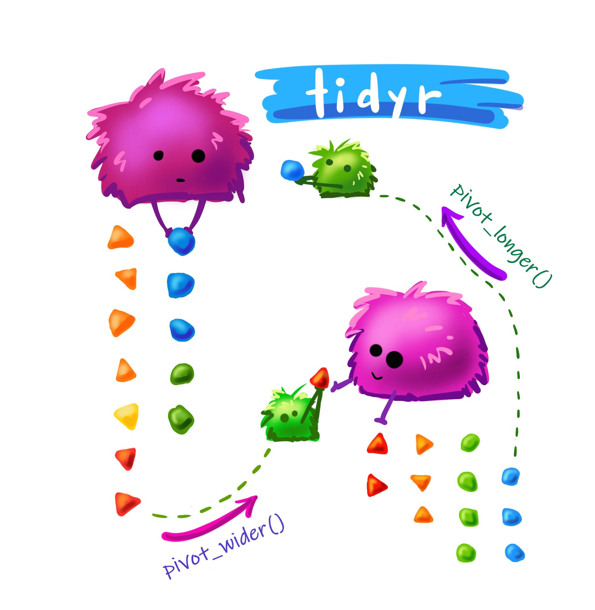
Fonte imagem: Allison Horst. Eu amo essas imagens!
Quando usar pivot_longer
Cenário: Múltiplas colunas representam valores de uma mesma variável.
Exemplo:
- dados de vendas com colunas para cada mês (Jan, Fev, Mar…)
- Atributos sensoriais tratados como colunas separadas
- Medições repetidas em momentos diferentes
Objetivo: Converter formato wide (largo) para long (longo) para análises e visualizações mais eficientes.
Por que transformar para long?
- Visualização: ggplot2 funciona melhor com dados long
- Análise por grupos: Facilita agrupamentos e sumarizações
- Modelagem: Muitos modelos exigem formato long
- Comparações: Permite comparar múltiplas categorias simultaneamente
pivot_longer - código
# Transformar atributos sensoriais para formato long
coffee_long <- coffee_selected %>%
pivot_longer(
cols = c(aroma, flavor, aftertaste, acidity, body, balance),
names_to = "atributo",
values_to = "pontuacao")
# Visualizar primeiras linhas
coffee_long %>%
head(2) %>%
DT::datatable(
options = list(scrollX = TRUE, pageLength = 3, dom = 't'),
rownames = FALSE)pivot_longer - resultado
Estrutura resultante - código
# Verificar dimensões
cat("Dimensões originais:", dim(coffee_selected), "\n")
cat("Dimensões após pivot_longer:", dim(coffee_long), "\n")
# Cada café agora tem 6 linhas (uma por atributo)
coffee_long %>%
filter(country_of_origin == "Brazil") %>%
slice(1:6) %>%
select(country_of_origin, variety, atributo, pontuacao)Estrutura resultante - comparação
Dimensões originais: 1339 10 Dimensões após pivot_longer: 8034 6 | country_of_origin | variety | atributo | pontuacao |
|---|---|---|---|
| Brazil | NA | aroma | 8.58 |
| Brazil | NA | flavor | 8.42 |
| Brazil | NA | aftertaste | 8.42 |
| Brazil | NA | acidity | 8.50 |
| Brazil | NA | body | 8.25 |
| Brazil | NA | balance | 8.33 |
Visualização com dados long - código
# Paleta de cores do café
cores_cafe <- c("#6F4E37", "#8B4513", "#A0522D",
"#CD853F", "#DEB887", "#F5DEB3")
coffee_long %>%
group_by(atributo) %>%
summarise(media = mean(pontuacao, na.rm = TRUE)) %>%
ggplot(aes(x = reorder(atributo, media), y = media, fill = atributo)) +
geom_col(show.legend = FALSE) +
scale_fill_manual(values = cores_cafe) +
coord_flip() +
labs(
title = "Pontuação média por atributo sensorial",
x = "Atributo",
y = "Pontuação média",
caption = "Jeni Lopes | Café com R.") +
theme_classic(base_size = 14)Visualização com dados long - gráfico
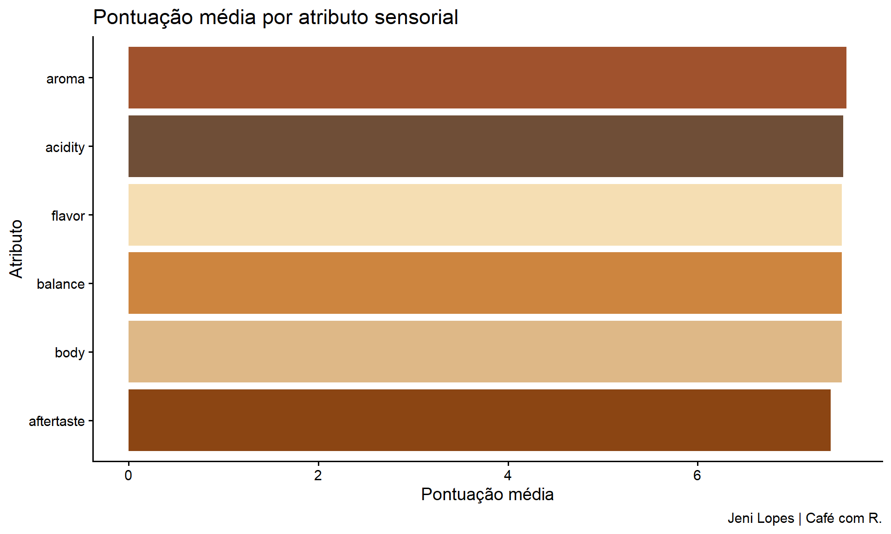
Transformações: pivot_wider
Fonte: Allison Horst.
Quando usar pivot_wider
Cenário: Valores estão empilhados e precisam ser distribuídos em colunas.
Exemplo:
- Converter resultados long para tabelas de apresentação
- Criar matriz de comparação entre grupos
- Preparar dados para análise de correlação
Objetivo: Converter formato long (longo) para wide (largo).
Por que transformar para wide?
- Apresentação: Tabelas resumo são mais legíveis em formato wide
- Correlações: Matrizes de correlação exigem formato wide
- Compatibilidade: Alguns pacotes esperam dados wide
- Leitura: Facilita comparações visuais rápidas
pivot_wider - código
pivot_wider - resultado
Criar tabela de resumo wide - código
# Resumo por país e atributo
resumo_pais <- coffee_long %>%
group_by(country_of_origin, atributo) %>%
summarise(media = mean(pontuacao, na.rm = TRUE), .groups = "drop") %>%
pivot_wider(
names_from = atributo,
values_from = media)
# Top 5 países
resumo_pais %>%
head(5) %>%
DT::datatable(
options = list(scrollX = TRUE, pageLength = 5, dom = 't'),
rownames = FALSE) %>%
DT::formatRound(columns = 2:7, digits = 2)Criar tabela de resumo wide - resultado
Transformações: nest e unnest
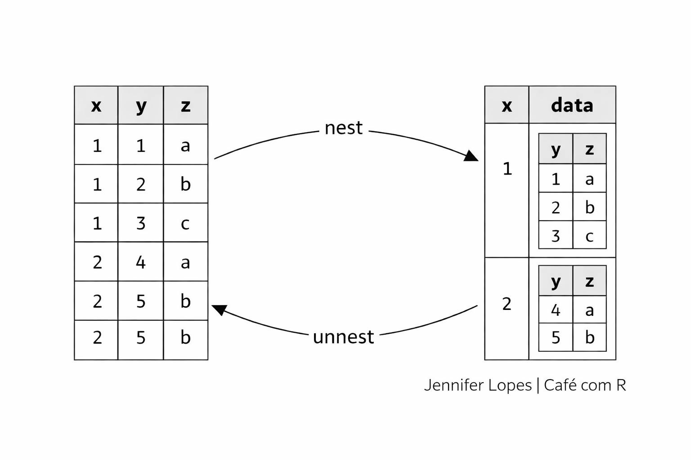
Fonte: Imagem gerada no ChatGPT.
Quando usar nest
Conceito: List-columns permitem armazenar dataframes dentro de dataframes.
Cenário:
- Agrupar dados relacionados hierarquicamente
- Aplicar modelos diferentes para cada grupo
- Manter contexto de agrupamento durante operações complexas
Objetivo: Criar estruturas hierárquicas com list-columns.
Por que usar dados aninhados?
- Organização: Mantém dados relacionados juntos
- Operações em Grupo: Aplica funções complexas por grupo
- Modelagem: Ajusta modelos separados por categoria
- Eficiência: Evita múltiplos dataframes soltos
nest - código
nest - resultado
Estrutura dos dados aninhados - código
Eestrutura dos dados aninhados - resultado
gropd_df [37 × 2] (S3: grouped_df/tbl_df/tbl/data.frame)
$ country_of_origin: chr [1:37] "Ethiopia" "Guatemala" "Brazil" "Peru" ...
$ data :List of 37
- attr(*, "groups")= tibble [37 × 2] (S3: tbl_df/tbl/data.frame)
..- attr(*, ".drop")= logi TRUEAcessar dados do país específico
| variety | processing_method | aroma | flavor | aftertaste | acidity | body | balance | total_cup_points |
|---|---|---|---|---|---|---|---|---|
| NA | Washed / Wet | 8.67 | 8.83 | 8.67 | 8.75 | 8.50 | 8.42 | 90.58 |
| Other | Washed / Wet | 8.75 | 8.67 | 8.50 | 8.58 | 8.42 | 8.42 | 89.92 |
Operações com dados aninhados - código
# Calcular estatísticas por país usando map
library(purrr)
coffee_stats <- coffee_nested %>%
mutate(
n_avaliacoes = map_int(data, nrow),
media_total = map_dbl(data, ~mean(.x$total_cup_points, na.rm = TRUE)),
sd_total = map_dbl(data, ~sd(.x$total_cup_points, na.rm = TRUE)))
# Visualizar
coffee_stats %>%
select(-data) %>%
arrange(desc(media_total)) %>%
head(5)Operações com dados aninhados - resultado
Quando usar unnest
Conceito: Expandir dados aninhados de volta ao formato tabular.
Cenário:
- Retornar à estrutura original após operações
- Preparar dados para análises convencionais
- Combinar resultados de múltiplos grupos
Objetivo: Desfazer o aninhamento para análises tabulares.
unnest - código
unnest - resultado
dados são idênticos ao original? FALSE Dimensões após unnest: 1339 10Workflow de uma EDA
Estrutura do processo exploratório
- Importação de dados
- Inspeção inicial
- Verificar tipos de dados
- Analisar dados ausentes
- Estatísticas descritivas
- Visualizações univariadas
- Análises bivariadas
- Identificar padrões
- Documentar resultados
O que é EDA?
Exploratory Data Analysis (EDA) é o processo sistemático de investigar dados para:
- Descobrir padrões e relações
- Detectar anomalias e outliers
- Testar hipóteses iniciais
- Verificar pressupostos estatísticos
- Guiar modelagem posterior
Origem: Proposta por John Tukey (1977) como filosofia de análise de dados.
Princípios do workflow EDA
- Sistematização: Seguir sequência consistente e documentada
- Ceticismo: Questionar resultados e verificar suposições
- Visualização: Combinar números e gráficos
- Iteração: Revisitar etapas conforme necessário
- Documentação: Registrar descobertas e decisões
Por que EDA é fundamental?
Antes da modelagem
- Identificar problemas de qualidade
- Entender distribuições
- Detectar multicolinearidade
- Selecionar features relevantes
Durante o projeto
- Validar transformações
- Verificar pressupostos
- Guiar decisões técnicas
- Comunicar com stakeholders
Inspeção inicial
Dimensões e estrutura - código
Dimensões e estrutura - resultado
[1] 1339 43spc_tbl_ [1,339 × 43] (S3: spec_tbl_df/tbl_df/tbl/data.frame)
$ total_cup_points : num [1:1339] 90.6 89.9 89.8 89 88.8 ...
$ species : chr [1:1339] "Arabica" "Arabica" "Arabica" "Arabica" ...
$ owner : chr [1:1339] "metad plc" "metad plc" "grounds for health admin" "yidnekachew dabessa" ...
$ country_of_origin : chr [1:1339] "Ethiopia" "Ethiopia" "Guatemala" "Ethiopia" ...
$ farm_name : chr [1:1339] "metad plc" "metad plc" "san marcos barrancas \"san cristobal cuch" "yidnekachew dabessa coffee plantation" ...
$ lot_number : chr [1:1339] NA NA NA NA ...
$ mill : chr [1:1339] "metad plc" "metad plc" NA "wolensu" ...
$ ico_number : chr [1:1339] "2014/2015" "2014/2015" NA NA ...
$ company : chr [1:1339] "metad agricultural developmet plc" "metad agricultural developmet plc" NA "yidnekachew debessa coffee plantation" ...
$ altitude : chr [1:1339] "1950-2200" "1950-2200" "1600 - 1800 m" "1800-2200" ...
$ region : chr [1:1339] "guji-hambela" "guji-hambela" NA "oromia" ...
$ producer : chr [1:1339] "METAD PLC" "METAD PLC" NA "Yidnekachew Dabessa Coffee Plantation" ...
$ number_of_bags : num [1:1339] 300 300 5 320 300 100 100 300 300 50 ...
$ bag_weight : chr [1:1339] "60 kg" "60 kg" "1" "60 kg" ...
$ in_country_partner : chr [1:1339] "METAD Agricultural Development plc" "METAD Agricultural Development plc" "Specialty Coffee Association" "METAD Agricultural Development plc" ...
$ harvest_year : chr [1:1339] "2014" "2014" NA "2014" ...
$ grading_date : chr [1:1339] "April 4th, 2015" "April 4th, 2015" "May 31st, 2010" "March 26th, 2015" ...
$ owner_1 : chr [1:1339] "metad plc" "metad plc" "Grounds for Health Admin" "Yidnekachew Dabessa" ...
$ variety : chr [1:1339] NA "Other" "Bourbon" NA ...
$ processing_method : chr [1:1339] "Washed / Wet" "Washed / Wet" NA "Natural / Dry" ...
$ aroma : num [1:1339] 8.67 8.75 8.42 8.17 8.25 8.58 8.42 8.25 8.67 8.08 ...
$ flavor : num [1:1339] 8.83 8.67 8.5 8.58 8.5 8.42 8.5 8.33 8.67 8.58 ...
$ aftertaste : num [1:1339] 8.67 8.5 8.42 8.42 8.25 8.42 8.33 8.5 8.58 8.5 ...
$ acidity : num [1:1339] 8.75 8.58 8.42 8.42 8.5 8.5 8.5 8.42 8.42 8.5 ...
$ body : num [1:1339] 8.5 8.42 8.33 8.5 8.42 8.25 8.25 8.33 8.33 7.67 ...
$ balance : num [1:1339] 8.42 8.42 8.42 8.25 8.33 8.33 8.25 8.5 8.42 8.42 ...
$ uniformity : num [1:1339] 10 10 10 10 10 10 10 10 9.33 10 ...
$ clean_cup : num [1:1339] 10 10 10 10 10 10 10 10 10 10 ...
$ sweetness : num [1:1339] 10 10 10 10 10 10 10 9.33 9.33 10 ...
$ cupper_points : num [1:1339] 8.75 8.58 9.25 8.67 8.58 8.33 8.5 9 8.67 8.5 ...
$ moisture : num [1:1339] 0.12 0.12 0 0.11 0.12 0.11 0.11 0.03 0.03 0.1 ...
$ category_one_defects : num [1:1339] 0 0 0 0 0 0 0 0 0 0 ...
$ quakers : num [1:1339] 0 0 0 0 0 0 0 0 0 0 ...
$ color : chr [1:1339] "Green" "Green" NA "Green" ...
$ category_two_defects : num [1:1339] 0 1 0 2 2 1 0 0 0 4 ...
$ expiration : chr [1:1339] "April 3rd, 2016" "April 3rd, 2016" "May 31st, 2011" "March 25th, 2016" ...
$ certification_body : chr [1:1339] "METAD Agricultural Development plc" "METAD Agricultural Development plc" "Specialty Coffee Association" "METAD Agricultural Development plc" ...
$ certification_address: chr [1:1339] "309fcf77415a3661ae83e027f7e5f05dad786e44" "309fcf77415a3661ae83e027f7e5f05dad786e44" "36d0d00a3724338ba7937c52a378d085f2172daa" "309fcf77415a3661ae83e027f7e5f05dad786e44" ...
$ certification_contact: chr [1:1339] "19fef5a731de2db57d16da10287413f5f99bc2dd" "19fef5a731de2db57d16da10287413f5f99bc2dd" "0878a7d4b9d35ddbf0fe2ce69a2062cceb45a660" "19fef5a731de2db57d16da10287413f5f99bc2dd" ...
$ unit_of_measurement : chr [1:1339] "m" "m" "m" "m" ...
$ altitude_low_meters : num [1:1339] 1950 1950 1600 1800 1950 ...
$ altitude_high_meters : num [1:1339] 2200 2200 1800 2200 2200 NA NA 1700 1700 1850 ...
$ altitude_mean_meters : num [1:1339] 2075 2075 1700 2000 2075 ...Nomes das variáveis - código
Nomes das variáveis - resultado
[1] "total_cup_points" "species" "owner"
[4] "country_of_origin" "farm_name" "lot_number"
[7] "mill" "ico_number" "company"
[10] "altitude" "region" "producer"
[13] "number_of_bags" "bag_weight" "in_country_partner"
[16] "harvest_year" "grading_date" "owner_1"
[19] "variety" "processing_method" "aroma"
[22] "flavor" "aftertaste" "acidity"
[25] "body" "balance" "uniformity"
[28] "clean_cup" "sweetness" "cupper_points"
[31] "moisture" "category_one_defects" "quakers"
[34] "color" "category_two_defects" "expiration"
[37] "certification_body" "certification_address" "certification_contact"
[40] "unit_of_measurement" "altitude_low_meters" "altitude_high_meters"
[43] "altitude_mean_meters" Tipos de dados - código
Tipos de dados - resultado
DataExplorer: exploração automatizada
O que é DataExplorer?
DataExplorer é um pacote para EDA automatizada que:
- Gera relatórios HTML completos
- Cria visualizações padronizadas
- Identifica problemas de qualidade
- Economiza tempo na fase exploratória
Ideal para: Obter visão panorâmica rápida dos dados.
Visão geral - código
Visão geral - resultado
# A tibble: 1 × 9
rows columns discrete_columns continuous_columns all_missing_columns
<int> <int> <int> <int> <int>
1 1339 43 24 19 0
# ℹ 4 more variables: total_missing_values <int>, complete_rows <int>,
# total_observations <int>, memory_usage <dbl>Visualização da estrutura - código
Visualização da estrutura - gráfico
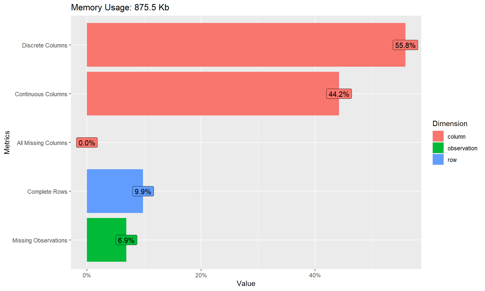
Distribuição das variáveis numéricas - código
Distribuição das variáveis numéricas - gráfico
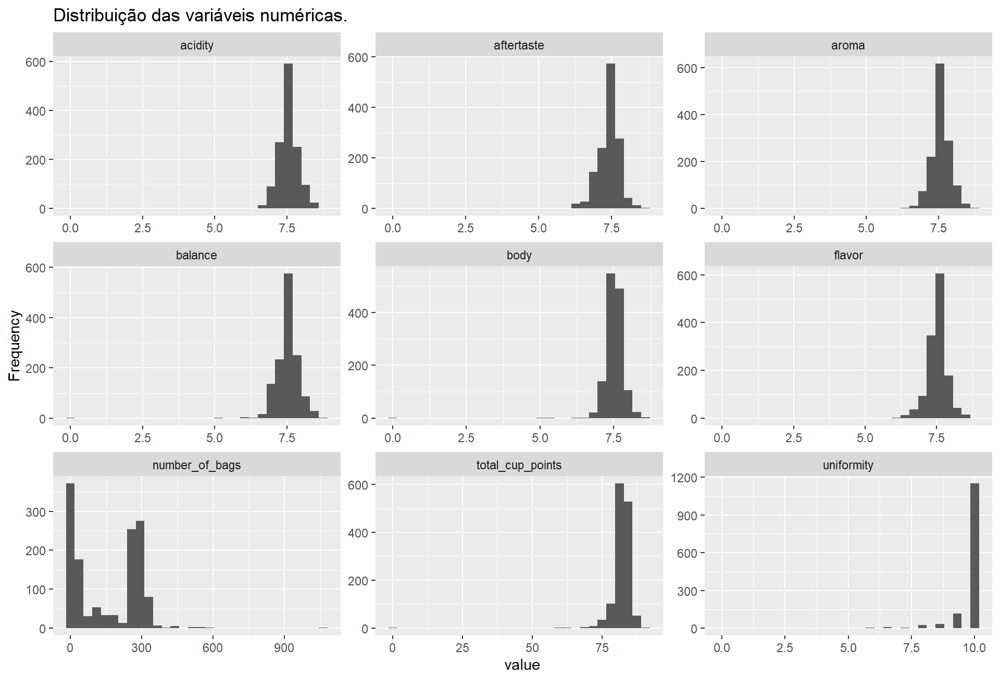
Análise de dados ausentes - código
Análise de dados ausentes - gráfico
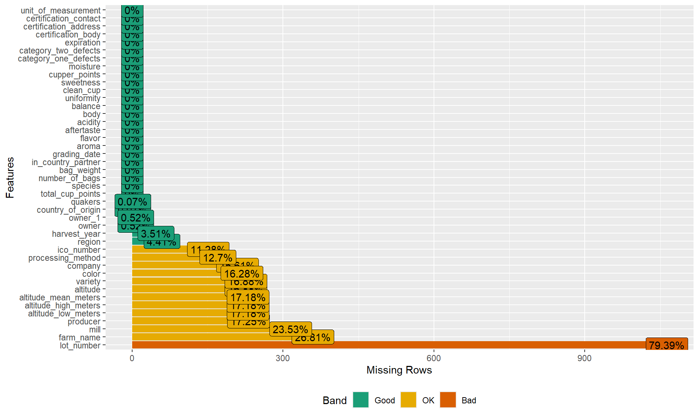
Correlações entre variáveis - código
Correlações entre variáveis - gráfico
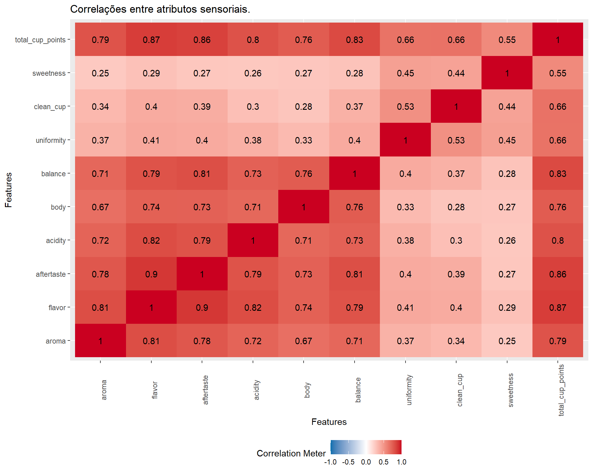
skimr: Resumos estatísticos

O que é skimr?
skimr fornece resumos estatísticos aprimorados que:
- Organiza resultados por tipo de variável
- Inclui histogramas inline (sparklines)
- Mostra estatísticas específicas por tipo
- Identifica dados ausentes por variável
Vantagem: Mais informativo que summary() base do R.
Visão geral com skimr - código
Visão geral com skimr - resultado
| Name | coffee |
| Number of rows | 1339 |
| Number of columns | 43 |
| _______________________ | |
| Column type frequency: | |
| character | 24 |
| numeric | 19 |
| ________________________ | |
| Group variables | None |
Variable type: character
| skim_variable | n_missing | complete_rate | min | max | empty | n_unique | whitespace |
|---|---|---|---|---|---|---|---|
| species | 0 | 1.00 | 7 | 7 | 0 | 2 | 0 |
| owner | 7 | 0.99 | 3 | 50 | 0 | 315 | 0 |
| country_of_origin | 1 | 1.00 | 4 | 28 | 0 | 36 | 0 |
| farm_name | 359 | 0.73 | 1 | 73 | 0 | 571 | 0 |
| lot_number | 1063 | 0.21 | 1 | 71 | 0 | 227 | 0 |
| mill | 315 | 0.76 | 1 | 77 | 0 | 460 | 0 |
| ico_number | 151 | 0.89 | 1 | 40 | 0 | 847 | 0 |
| company | 209 | 0.84 | 3 | 73 | 0 | 281 | 0 |
| altitude | 226 | 0.83 | 1 | 41 | 0 | 396 | 0 |
| region | 59 | 0.96 | 2 | 76 | 0 | 356 | 0 |
| producer | 231 | 0.83 | 1 | 100 | 0 | 691 | 0 |
| bag_weight | 0 | 1.00 | 1 | 8 | 0 | 56 | 0 |
| in_country_partner | 0 | 1.00 | 7 | 85 | 0 | 27 | 0 |
| harvest_year | 47 | 0.96 | 3 | 24 | 0 | 46 | 0 |
| grading_date | 0 | 1.00 | 13 | 20 | 0 | 567 | 0 |
| owner_1 | 7 | 0.99 | 3 | 50 | 0 | 319 | 0 |
| variety | 226 | 0.83 | 4 | 21 | 0 | 29 | 0 |
| processing_method | 170 | 0.87 | 5 | 25 | 0 | 5 | 0 |
| color | 218 | 0.84 | 4 | 12 | 0 | 4 | 0 |
| expiration | 0 | 1.00 | 13 | 20 | 0 | 566 | 0 |
| certification_body | 0 | 1.00 | 7 | 85 | 0 | 26 | 0 |
| certification_address | 0 | 1.00 | 40 | 40 | 0 | 32 | 0 |
| certification_contact | 0 | 1.00 | 40 | 40 | 0 | 29 | 0 |
| unit_of_measurement | 0 | 1.00 | 1 | 2 | 0 | 2 | 0 |
Variable type: numeric
| skim_variable | n_missing | complete_rate | mean | sd | p0 | p25 | p50 | p75 | p100 | hist |
|---|---|---|---|---|---|---|---|---|---|---|
| total_cup_points | 0 | 1.00 | 82.09 | 3.50 | 0 | 81.08 | 82.50 | 83.67 | 90.58 | ▁▁▁▁▇ |
| number_of_bags | 0 | 1.00 | 154.18 | 129.99 | 0 | 14.00 | 175.00 | 275.00 | 1062.00 | ▇▇▁▁▁ |
| aroma | 0 | 1.00 | 7.57 | 0.38 | 0 | 7.42 | 7.58 | 7.75 | 8.75 | ▁▁▁▁▇ |
| flavor | 0 | 1.00 | 7.52 | 0.40 | 0 | 7.33 | 7.58 | 7.75 | 8.83 | ▁▁▁▁▇ |
| aftertaste | 0 | 1.00 | 7.40 | 0.40 | 0 | 7.25 | 7.42 | 7.58 | 8.67 | ▁▁▁▁▇ |
| acidity | 0 | 1.00 | 7.54 | 0.38 | 0 | 7.33 | 7.58 | 7.75 | 8.75 | ▁▁▁▁▇ |
| body | 0 | 1.00 | 7.52 | 0.37 | 0 | 7.33 | 7.50 | 7.67 | 8.58 | ▁▁▁▁▇ |
| balance | 0 | 1.00 | 7.52 | 0.41 | 0 | 7.33 | 7.50 | 7.75 | 8.75 | ▁▁▁▁▇ |
| uniformity | 0 | 1.00 | 9.83 | 0.55 | 0 | 10.00 | 10.00 | 10.00 | 10.00 | ▁▁▁▁▇ |
| clean_cup | 0 | 1.00 | 9.84 | 0.76 | 0 | 10.00 | 10.00 | 10.00 | 10.00 | ▁▁▁▁▇ |
| sweetness | 0 | 1.00 | 9.86 | 0.62 | 0 | 10.00 | 10.00 | 10.00 | 10.00 | ▁▁▁▁▇ |
| cupper_points | 0 | 1.00 | 7.50 | 0.47 | 0 | 7.25 | 7.50 | 7.75 | 10.00 | ▁▁▁▇▁ |
| moisture | 0 | 1.00 | 0.09 | 0.05 | 0 | 0.09 | 0.11 | 0.12 | 0.28 | ▃▇▅▁▁ |
| category_one_defects | 0 | 1.00 | 0.48 | 2.55 | 0 | 0.00 | 0.00 | 0.00 | 63.00 | ▇▁▁▁▁ |
| quakers | 1 | 1.00 | 0.17 | 0.83 | 0 | 0.00 | 0.00 | 0.00 | 11.00 | ▇▁▁▁▁ |
| category_two_defects | 0 | 1.00 | 3.56 | 5.31 | 0 | 0.00 | 2.00 | 4.00 | 55.00 | ▇▁▁▁▁ |
| altitude_low_meters | 230 | 0.83 | 1750.71 | 8669.44 | 1 | 1100.00 | 1310.64 | 1600.00 | 190164.00 | ▇▁▁▁▁ |
| altitude_high_meters | 230 | 0.83 | 1799.35 | 8668.81 | 1 | 1100.00 | 1350.00 | 1650.00 | 190164.00 | ▇▁▁▁▁ |
| altitude_mean_meters | 230 | 0.83 | 1775.03 | 8668.63 | 1 | 1100.00 | 1310.64 | 1600.00 | 190164.00 | ▇▁▁▁▁ |
Resumo das variáveis numéricas - código
Resumo das variáveis numéricas - resultado
| Name | Piped data |
| Number of rows | 1339 |
| Number of columns | 7 |
| _______________________ | |
| Column type frequency: | |
| numeric | 7 |
| ________________________ | |
| Group variables | None |
Variable type: numeric
| skim_variable | n_missing | complete_rate | mean | sd | p0 | p25 | p50 | p75 | p100 | hist |
|---|---|---|---|---|---|---|---|---|---|---|
| aroma | 0 | 1 | 7.57 | 0.38 | 0 | 7.42 | 7.58 | 7.75 | 8.75 | ▁▁▁▁▇ |
| flavor | 0 | 1 | 7.52 | 0.40 | 0 | 7.33 | 7.58 | 7.75 | 8.83 | ▁▁▁▁▇ |
| aftertaste | 0 | 1 | 7.40 | 0.40 | 0 | 7.25 | 7.42 | 7.58 | 8.67 | ▁▁▁▁▇ |
| acidity | 0 | 1 | 7.54 | 0.38 | 0 | 7.33 | 7.58 | 7.75 | 8.75 | ▁▁▁▁▇ |
| body | 0 | 1 | 7.52 | 0.37 | 0 | 7.33 | 7.50 | 7.67 | 8.58 | ▁▁▁▁▇ |
| balance | 0 | 1 | 7.52 | 0.41 | 0 | 7.33 | 7.50 | 7.75 | 8.75 | ▁▁▁▁▇ |
| total_cup_points | 0 | 1 | 82.09 | 3.50 | 0 | 81.08 | 82.50 | 83.67 | 90.58 | ▁▁▁▁▇ |
Resumo das variáveis categóricas - código
Resumo das variáveis categóricas - resultado
| Name | Piped data |
| Number of rows | 1339 |
| Number of columns | 5 |
| _______________________ | |
| Column type frequency: | |
| character | 5 |
| ________________________ | |
| Group variables | None |
Variable type: character
| skim_variable | n_missing | complete_rate | min | max | empty | n_unique | whitespace |
|---|---|---|---|---|---|---|---|
| country_of_origin | 1 | 1.00 | 4 | 28 | 0 | 36 | 0 |
| variety | 226 | 0.83 | 4 | 21 | 0 | 29 | 0 |
| processing_method | 170 | 0.87 | 5 | 25 | 0 | 5 | 0 |
| color | 218 | 0.84 | 4 | 12 | 0 | 4 | 0 |
| species | 0 | 1.00 | 7 | 7 | 0 | 2 | 0 |
Estatísticas personalizadas - código
# Criar função personalizada para CV (Coeficiente de Variação)
coffee %>%
select(aroma, flavor, aftertaste, acidity, body, balance) %>%
summarise(
across(
everything(),
list(
media = ~mean(., na.rm = TRUE),
mediana = ~median(., na.rm = TRUE),
cv = ~sd(., na.rm = TRUE) / mean(., na.rm = TRUE)))) %>%
pivot_longer(
cols = everything(),
names_to = c("variavel", "estatistica"),
names_sep = "_") %>%
pivot_wider(
names_from = estatistica,
values_from = value)Estatísticas personalizadas - resultado
naniar: análise de dados ausentes
O que é naniar?
naniar é especializado em análise de dados ausentes (missing data):
- Visualiza padrões de ausência
- Calcula proporções por variável
- Identifica se ausência é aleatória (MCAR, MAR, MNAR)
- Facilita decisões sobre imputação
Crucial: dados ausentes podem viesar análises e modelos.
Por que analisar dados ausentes?
- Viés: Ausência não aleatória distorce resultados
- Perda de poder: Reduz tamanho amostral efetivo
- Invalidação: Pode violar pressupostos de modelos
- Decisão informada: Guia estratégia de tratamento (imputar x excluir)
Tipos de dados ausentes
MCAR (Missing Completely At Random): Ausência independente de qualquer variável.
MAR (Missing At Random): Ausência relacionada a variáveis observadas.
MNAR (Missing Not At Random): Ausência relacionada ao próprio valor ausente.
Proporção de dados ausentes - código
Proporção de dados ausentes - resultado
Visualização de padrões ausentes - código
Visualização de padrões ausentes - gráfico
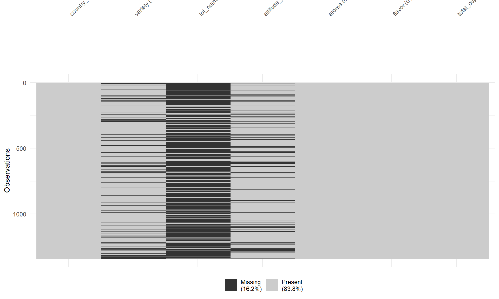
Análise de ausência por categoria - código
# dados ausentes de altitude por país
coffee %>%
group_by(country_of_origin) %>%
naniar::miss_var_summary() %>%
filter(variable == "altitude_mean_meters") %>%
arrange(desc(pct_miss)) %>%
head(10) %>%
ggplot(aes(x = reorder(country_of_origin, pct_miss),
y = pct_miss)) +
geom_col(fill = "#8B4513") +
coord_flip() +
labs(
title = "Proporção de dados ausentes de altitude por país.",
x = "País",
y = "Percentual Ausente (%)",
caption = "Jennifer Lopes | Café com R.") +
theme_classic(base_size = 12)Análise de ausência por categoria - gráfico
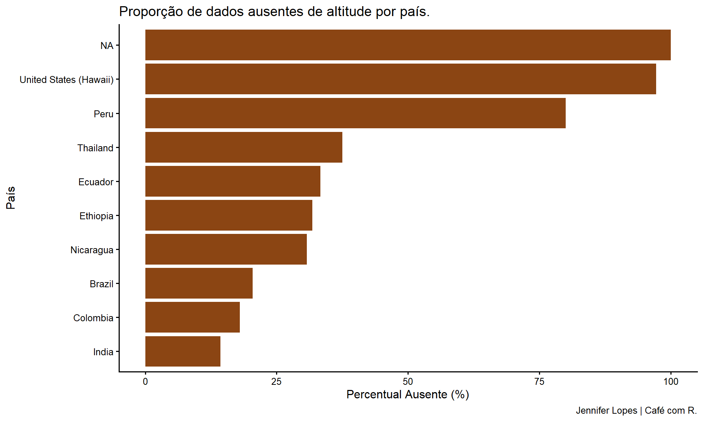
Estratégias de tratamento (cada caso é um, cuidado)
Quando excluir (cuidado):
- Ausência < 5% e MCAR
- Variável não essencial para análise
Quando imputar (cuidado):
- Ausência 5-40% e MAR
- Variável importante para modelo
- dados ausentes têm padrão explicável
Métodos de imputação: Média/mediana, regressão, KNN, MICE.
Imputação simples - código
# Estratégias comuns de tratamento
coffee_treated <- coffee %>%
mutate(
# Imputar altitude com mediana global
altitude_filled = ifelse(
is.na(altitude_mean_meters),
median(altitude_mean_meters, na.rm = TRUE),
altitude_mean_meters),
# Criar flag de ausência (importante!)
altitude_missing = is.na(altitude_mean_meters))
# Verificar
coffee_treated %>%
select(country_of_origin, altitude_mean_meters,
altitude_filled, altitude_missing) %>%
head(3)Imputação simples - resultado
Análises univariadas
O que são análises univariadas?
Definição: Análise de uma variável por vez, sem considerar relações.
Objetivo:
- Entender distribuição de cada variável
- Verificar normalidade e simetria
- Detectar problemas de qualidade
Por que fazer: Base para análises mais complexas.
Por que análise univariada?
- Detectar problemas: Outliers, erros de digitação, valores impossíveis
- Entender dados: Forma da distribuição, centro, dispersão
- Guiar transformações: Decidir se precisa normalizar, logaritmar
- Comunicar: Gráficos simples para stakeholders
Distribuição da pontuação total - código
coffee %>%
ggplot(aes(x = total_cup_points)) +
geom_histogram(bins = 30, fill = "#6F4E37", alpha = 0.8) +
geom_vline(
aes(xintercept = mean(total_cup_points, na.rm = TRUE)),
color = "#CD853F", linetype = "dashed", size = 1) +
labs(
title = "Distribuição da pontuação total.",
subtitle = "Linha tracejada indica a média.",
x = "Pontuação Total",
y = "Frequência",
caption = "Jennifer Lopes | Café com R.") +
theme_classic(base_size = 14)Distribuição da pontuação total - gráfico
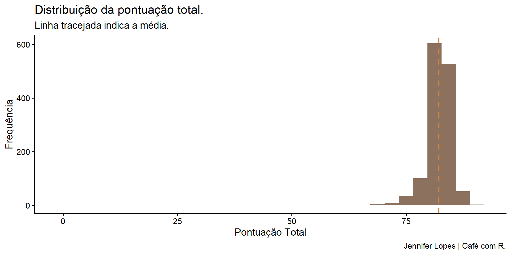
Densidade por atributo - código
coffee_long %>%
ggplot(aes(x = pontuacao, fill = atributo)) +
geom_density(alpha = 0.6) +
scale_fill_manual(values = cores_cafe) +
labs(
title = "Densidade de pontuações por atributo sensorial.",
x = "Pontuação",
y = "Densidade",
fill = "Atributo",
caption = "Jennifer Lopes | Café com R.") +
theme_classic(base_size = 12)Densidade por atributo - gráfico
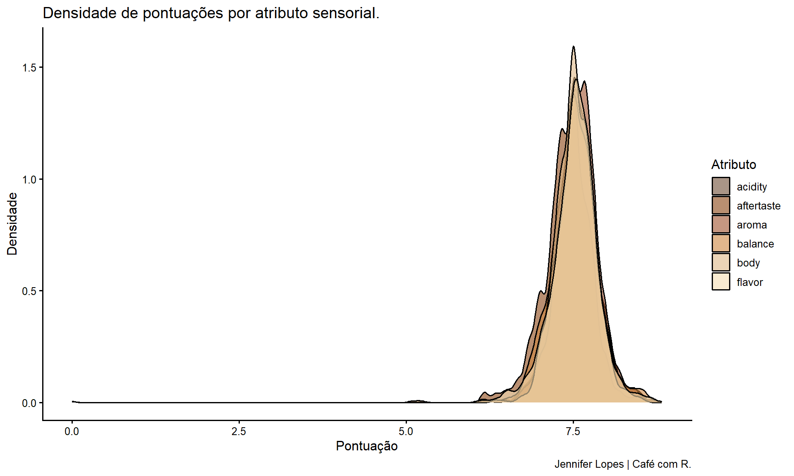
Boxplot de atributos - código
coffee_long %>%
ggplot(aes(x = atributo, y = pontuacao, fill = atributo)) +
geom_boxplot(show.legend = FALSE) +
scale_fill_manual(values = cores_cafe) +
labs(
title = "Distribuição de pontuações por atributo.",
x = "Atributo",
y = "Pontuação",
caption = "Jennifer Lopes | Café com R.") +
theme_classic(base_size = 12) +
theme(axis.text.x = element_text(angle = 45, hjust = 1))Boxplot de atributos - gráfico
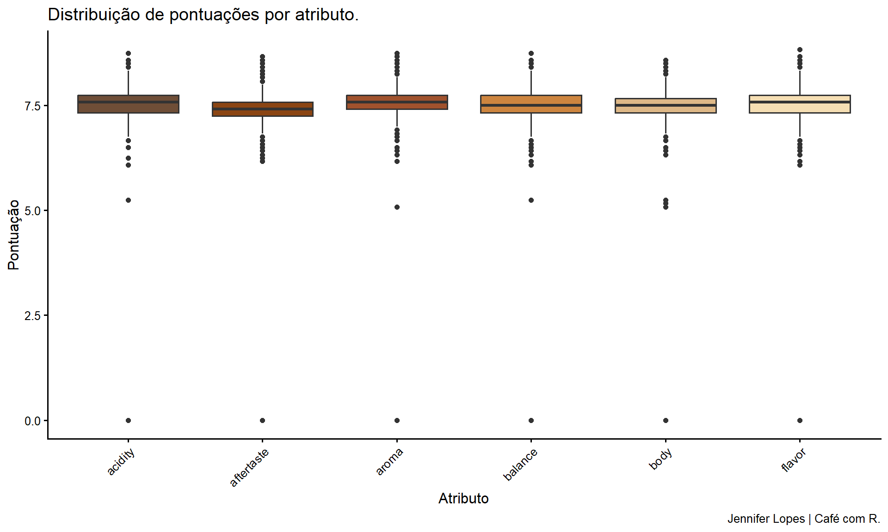
Países produtores - código
coffee %>%
count(country_of_origin, sort = TRUE) %>%
head(15) %>%
ggplot(aes(x = reorder(country_of_origin, n), y = n)) +
geom_col(fill = "#8B4513") +
coord_flip() +
labs(
title = "Os 15 Países que mais produziram - por número de avaliações.",
x = "País",
y = "Número de avaliações",
caption = "Jennifer Lopes | Café com R.") +
theme_classic(base_size = 12)Países produtores - gráfico
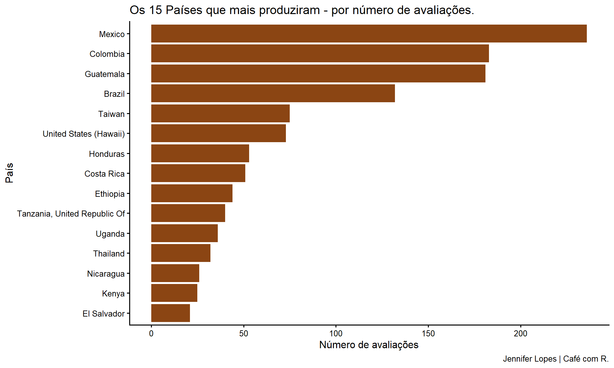
Análises bivariadas
O que são Análises bivariadas?
Definição: Análise da relação entre duas variáveis.
Objetivo:
- Identificar correlações e associações
- Entender como variáveis se relacionam
- Detectar tendências e padrões conjuntos
- Gerar hipóteses sobre causalidade
Tipos: Numérica-numérica, categórica-numérica, categórica-categórica.
Por que Análise bivariada?
- Relações: Descobrir como variáveis interagem
- Predição: Identificar preditores potenciais
- Segmentação: Encontrar diferenças entre grupos
- Negócio: Responder perguntas práticas
Pontuação por país - código
coffee %>%
group_by(country_of_origin) %>%
summarise(
media = mean(total_cup_points, na.rm = TRUE),
n = n()) %>%
filter(n >= 10) %>%
arrange(desc(media)) %>%
head(10) %>%
ggplot(aes(x = reorder(country_of_origin, media), y = media)) +
geom_col(fill = "#A0522D") +
geom_text(aes(label = round(media, 1)), hjust = -0.2, size = 3.5) +
coord_flip() +
labs(
title = "Países com maior pontuação média.",
subtitle = "Mínimo de 10 avaliações.",
x = "País",
y = "Pontuação Média",
caption = "Jennifer Lopes | Café com R.") +
theme_classic(base_size = 12)Pontuação por país - gráfico
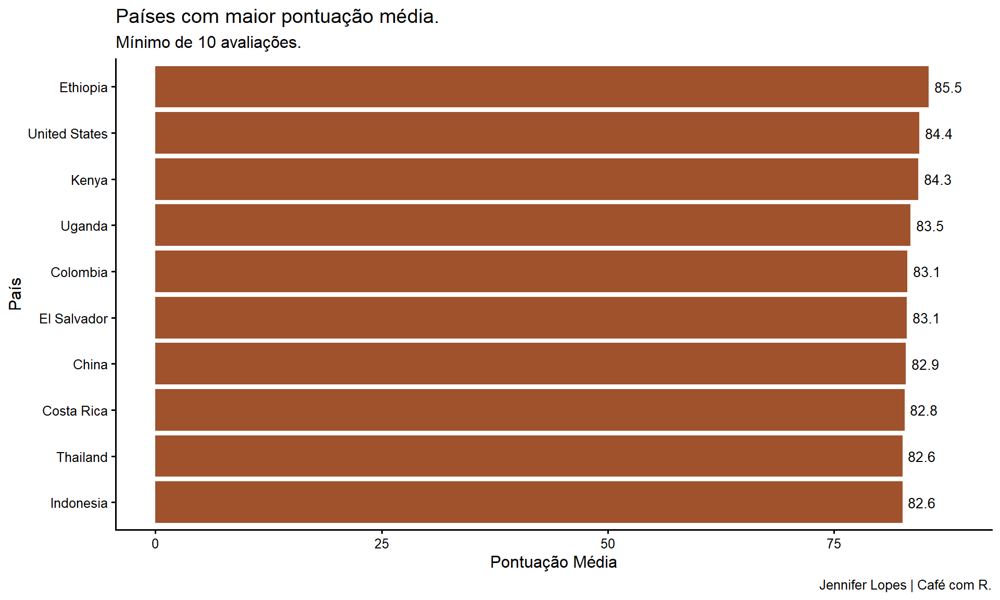
Relação altitude x pontuação - código
coffee %>%
filter(!is.na(altitude_mean_meters)) %>%
ggplot(aes(x = altitude_mean_meters, y = total_cup_points)) +
geom_point(alpha = 0.4, color = "#6F4E37") +
geom_smooth(method = "lm", color = "#CD853F", se = TRUE) +
labs(
title = "Relação entre altitude e pontuação total.",
subtitle = "Linha de regressão linear com intervalo de confiança.",
x = "Altitude Média (metros)",
y = "Pontuação Total",
caption = "Jennifer Lopes | Café com R.") +
theme_classic(base_size = 14)Relação altitude x pontuação - gráfico
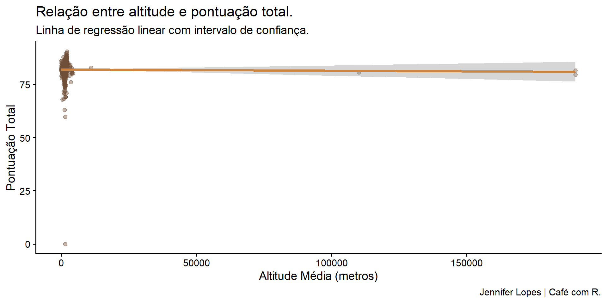
Interpretação: Altitude x Pontuação
Correlação observada: Positiva e fraca
Explicações:
- Altitude afeta maturação dos grãos (mais lenta = mais sabor)
- Temperaturas mais frias em altitude elevada
- Fatores confundidores: variedade, processamento, país
Limitação: Correlação ≠ Causalidade. Pode haver variáveis omitidas.
Comparação entre métodos de processamento - código
coffee %>%
filter(!is.na(processing_method)) %>%
group_by(processing_method) %>%
filter(n() >= 20) %>%
ggplot(aes(x = processing_method, y = total_cup_points,
fill = processing_method)) +
geom_violin(show.legend = FALSE, alpha = 0.7) +
geom_boxplot(width = 0.2, show.legend = FALSE, alpha = 0.5) +
scale_fill_manual(values = cores_cafe[1:5]) +
labs(
title = "Pontuação por método de processamento.",
subtitle = "Métodos com pelo menos 20 avaliações.",
x = "Método de Processamento",
y = "Pontuação Total",
caption = "Jennifer Lopes | Café com R.") +
theme_minimal(base_size = 12) +
theme(axis.text.x = element_text(angle = 45, hjust = 1))Comparação entre métodos de processamento - gráfico
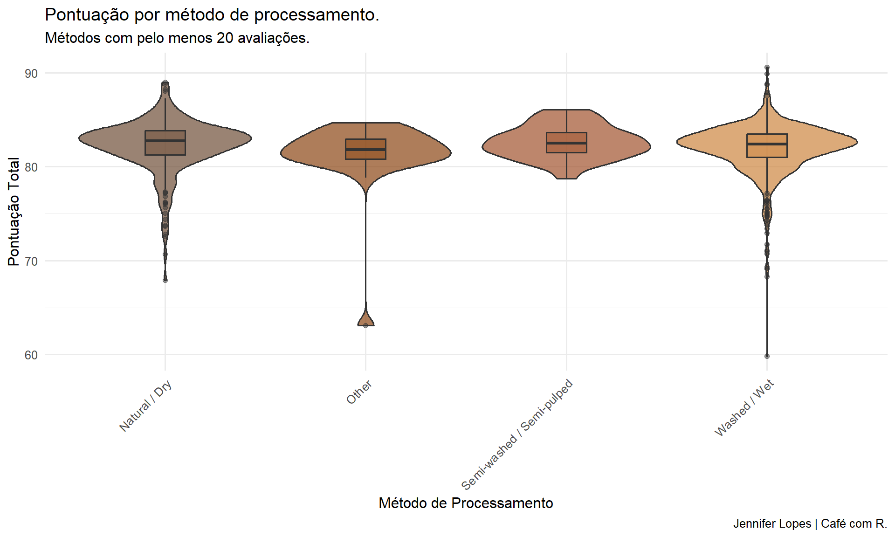
Matriz de correlação - código
library(corrplot)
# Calcular matriz de correlação
cor_matrix <- coffee %>%
select(
aroma, flavor, aftertaste, acidity, body,
balance, uniformity, clean_cup, sweetness) %>%
cor(use = "complete.obs")
# Visualizar
corrplot(
cor_matrix,
method = "color",
type = "upper",
order = "hclust",
tl.col = "black",
tl.srt = 45,
addCoef.col = "black",
number.cex = 0.7,
col = colorRampPalette(c("#F5DEB3", "#8B4513", "#3E2723"))(200),
title = "Correlações entre atributos sensoriais.",
mar = c(0, 0, 2, 0))Matriz de correlação - Gráfico
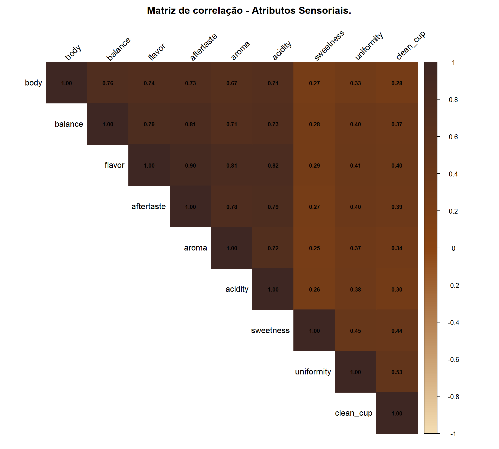
Identificação de outliers
O que são outliers?
Definição: Observações que desviam substancialmente do padrão geral dos dados.
Causas possíveis:
- Erro de medição ou digitação
- Variabilidade natural extrema
- Evento raro mas legítimo
- Mudança no processo de coleta
Importante: Outlier ≠ erro. Pode ser informação valiosa.
Por que identificar outliers?
- Qualidade: Detectar erros de coleta/digitação
- Modelagem: Outliers podem distorcer modelos
- Resultados: Casos extremos podem revelar padrões importantes
- Decisão: Decidir se mantém, transforma ou exclui
Métodos de detecção
IQR (Interquartile Range): Valores além de 1.5 × IQR dos quartis
Z-score: Valores com |z| > 3 (mais de 3 desvios padrões)
Isolation Forest: Algoritmo de machine learning
Visual: Boxplots e scatter plots
Detecção de outliers univariados - código
# Identificar outliers usando IQR
identify_outliers <- function(x) {
q1 <- quantile(x, 0.25, na.rm = TRUE)
q3 <- quantile(x, 0.75, na.rm = TRUE)
iqr <- q3 - q1
lower <- q1 - 1.5 * iqr
upper <- q3 + 1.5 * iqr
x < lower | x > upper
}
# Aplicar a variáveis sensoriais
coffee_outliers <- coffee %>%
mutate(
outlier_aroma = identify_outliers(aroma),
outlier_flavor = identify_outliers(flavor),
outlier_total = identify_outliers(total_cup_points))
# Resumo
coffee_outliers %>%
summarise(
n_outliers_aroma = sum(outlier_aroma, na.rm = TRUE),
n_outliers_flavor = sum(outlier_flavor, na.rm = TRUE),
n_outliers_total = sum(outlier_total, na.rm = TRUE))Detecção de outliers univariados - resultado
| n_outliers_aroma | n_outliers_flavor | n_outliers_total |
|---|---|---|
| 72 | 44 | 72 |
Visualização de outliers - código
coffee_outliers %>%
ggplot(aes(x = aroma, y = flavor)) +
geom_point(
aes(color = outlier_aroma | outlier_flavor),
alpha = 0.6,
size = 2) +
scale_color_manual(
values = c("#8B4513", "#CD5C5C"),
labels = c("Normal", "Outlier")) +
labs(
title = "Identificação de Outliers: Aroma x Flavor",
subtitle = "Método IQR (1.5 × IQR)",
x = "Aroma",
y = "Flavor",
color = "Status",
caption = "Jennifer Lopes | Café com R.") +
theme_classic(base_size = 14)Visualização de outliers - gráfico
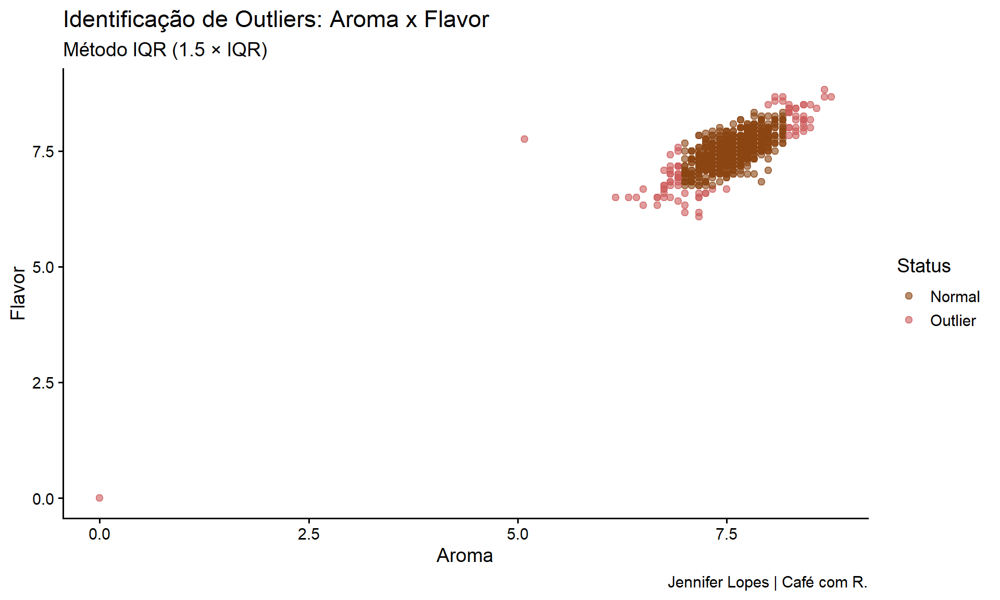
Decisões sobre outliers
Manter:
- Valores válidos e explicáveis
- Representam variabilidade real
- Análise robusta a outliers
Transformar:
- Log, raiz quadrada para reduzir influência
- Winsorização (substituir por percentil)
Excluir:
- Erros claros de medição
- Documentar critério de exclusão
- Relatórios com/sem outliers
Análise multivariada
O que é Análise multivariada?
Definição: Análise simultânea de múltiplas variáveis e suas inter-relações.
Técnicas:
- PCA (Principal Component Analysis)
- Clustering (K-means, hierárquico)
- Análise Fatorial
- MANOVA
Objetivo: Reduzir dimensionalidade, encontrar padrões complexos, agrupar observações similares.
Análise de Componentes Principais (PCA)
O que é PCA?
Técnica de redução de dimensionalidade que:
- Transforma variáveis correlacionadas em componentes independentes
- Primeira componente captura máxima variância
- Componentes subsequentes capturam variância residual
Utilidade: Visualizar dados multidimensionais, identificar padrões, reduzir ruído.
PCA - código
# Preparar dados para PCA
coffee_pca_data <- coffee %>%
select(
aroma, flavor, aftertaste, acidity,
body, balance, uniformity, clean_cup, sweetness) %>%
na.omit() %>%
scale()
# Executar PCA
pca_result <- prcomp(coffee_pca_data, center = FALSE, scale. = FALSE)
# Variância explicada
summary(pca_result)PCA - resultado
Importance of components:
PC1 PC2 PC3 PC4 PC5 PC6 PC7
Standard deviation 2.3264 1.1729 0.76538 0.69019 0.59738 0.52026 0.49060
Proportion of Variance 0.6013 0.1528 0.06509 0.05293 0.03965 0.03007 0.02674
Cumulative Proportion 0.6013 0.7542 0.81927 0.87219 0.91185 0.94192 0.96866
PC8 PC9
Standard deviation 0.42883 0.3133
Proportion of Variance 0.02043 0.0109
Cumulative Proportion 0.98910 1.0000Biplot: variáveis e observações - código
Biplot: variáveis e observações - gráfico
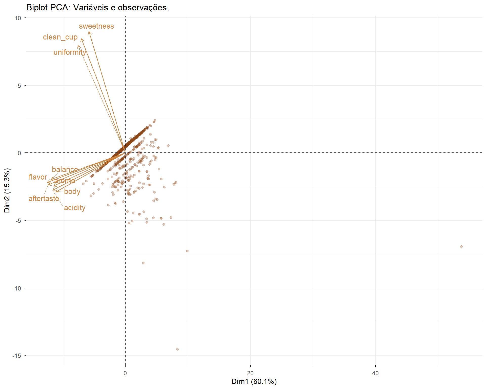
Segmentação e agrupamento
Análise de Clusters
O que é Clustering?
Técnica de agrupamento não supervisionado que:
- Identifica grupos naturais nos dados
- Observações no mesmo cluster são similares
- Observações em clusters diferentes são distintas
Método K-means: Algoritmo iterativo que minimiza variância intra-cluster.
K-means - código
# Preparar dados
coffee_cluster_data <- coffee %>%
select(aroma, flavor, aftertaste, acidity, body, balance) %>%
na.omit() %>%
scale()
# K-means com 3 clusters
set.seed(123)
kmeans_result <- kmeans(coffee_cluster_data, centers = 3, nstart = 25)
# Adicionar clusters ao dataset
coffee_clustered <- coffee %>%
select(aroma, flavor, aftertaste, acidity, body, balance) %>%
na.omit() %>%
mutate(cluster = as.factor(kmeans_result$cluster))
# Resumo dos clusters
coffee_clustered %>%
group_by(cluster) %>%
summarise(
n = n(),
across(c(aroma, flavor, balance), mean))K-means - resultado
Visualização dos clusters - código
coffee_clustered %>%
ggplot(aes(x = flavor, y = balance, color = cluster)) +
geom_point(alpha = 0.6, size = 2) +
scale_color_manual(values = cores_cafe[c(1, 3, 5)]) +
labs(
title = "Segmentação por K-means",
subtitle = "Flavor x Balance (3 clusters)",
x = "Flavor",
y = "Balance",
color = "Cluster",
caption = "Jennifer Lopes | Café com R.") +
theme_classic(base_size = 14)Visualização dos clusters - gráfico
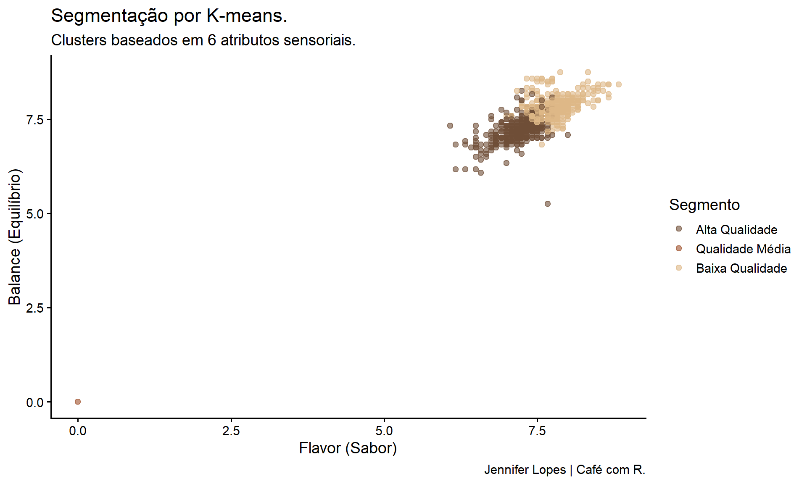
Documentação dos resultados
Principais resultados
- Qualidade geral: Média de pontuação total é 82.1 pontos (distribuição normal)
- Atributos correlacionados: Flavor, aftertaste e balance altamente correlacionados (r > 0.85)
- Efeito altitude: Correlação positiva fraca entre altitude e qualidade (r ≈ 0.25)
- Países destaque: Etiópia (85.5) e Quênia (85.0) lideram em pontuação média
- Métodos de processamento: Natural apresenta maior variabilidade que Washed
- Dados ausentes: Lot_number (63%) e altitude (26%) têm ausência substancial
Recomendações de análise
- Modelagem Preditiva: Usar atributos sensoriais para prever pontuação total
- Análise Regional: Investigar características específicas por região/país
- Efeito Processamento: Estudar impacto detalhado do método na qualidade
- Imputação Estratégica: Desenvolver modelos para imputar altitude por país
- Análise Temporal: Se disponível, examinar evolução da qualidade
- Segmentação de Mercado: Usar clusters para estratégias de marketing
Template para um relatório de EDA
Estrutura sugerida para documentação:
- Contexto e objetivos - Por que analisar estes dados?
- Descrição dos dados - Fonte, período, variáveis
- Qualidade dos dados - Ausência, tipos, consistência
- Estatísticas descritivas - Tendência central e dispersão
- Visualizações univariadas - Distribuição de cada variável
- Análises bivariadas e multivariadas - Relações e padrões
- Resultados e padrões identificados - Descobertas principais
- Limitações e considerações - Vieses e restrições
- Recomendações - Próximos passos e ações
Conclusão
Principais aprendizados
- Tidy Data simplifica análise e visualização sistematicamente
- pivot_longer/wider permitem reformatação flexível de dados
- nest/unnest facilitam operações hierárquicas complexas
- Workflow sistemático aumenta eficiência e reprodutibilidade
- Ferramentas especializadas (DataExplorer, skimr, naniar) economizam tempo
- Análises uni/bi/multivariadas fornecem visão completa dos dados
Próximos passos
- Praticar transformações com diferentes datasets
- Criar templates de EDA reutilizáveis
- Explorar análises multivariadas avançadas
- Desenvolver dashboards interativos (Shiny, flexdashboard)
- Documentar processos e decisões sistematicamente
- Automatizar relatórios para análises recorrentes
Obrigada!

Imagem: Allison Horst.
Continue praticando e explorando!
Esta apresentação é parte do projeto Café com R! É OPEN, USE, COMPARTILHE!
☕ Assine o Café com R
Fique por dentro das aulas, conteúdos, newsletter!
Que cada gole desperte uma nova ideia.
Que cada script abra uma nova conversa.
Que o Café com R, se torne um ponto de encontro nosso!

Jennifer Lopes • Café com R